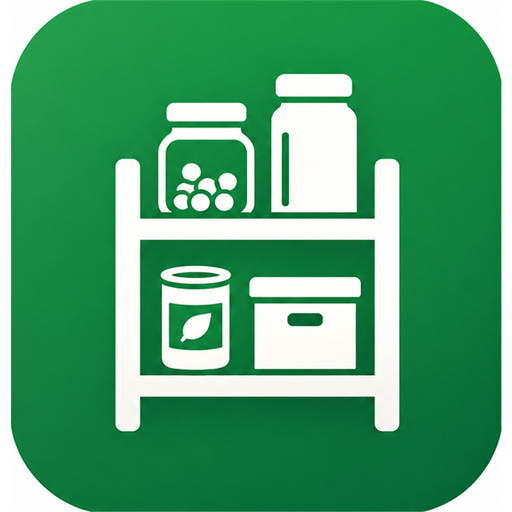
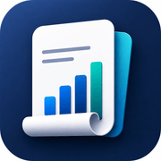

Bliscare
Produktkonzept und Umsetzung für eine private Medikamentenübersicht im Haushalt - übersichtlich, ohne medizinische Beratung.
Zu BliscarePortfolio / 2026
Wittmer AppCare ist die Einzelfirma von Janine Wittmer. Diese Seite versammelt Arbeiten, Konzepte und digitale Produkte - entstanden aus dem Wunsch nach klarer Struktur, ruhiger Gestaltung und echtem Nutzen.
Klare Ordnung als Grundlage guter digitaler Produkte.
Ruhige Oberflächen mit eigenem Charakter.
Bewusster Umgang mit Nutzen, Daten und Grenzen.
Projekte
Produktkonzept und Umsetzung für eine private Medikamentenübersicht im Haushalt - übersichtlich, ohne medizinische Beratung.
Zu Bliscare
App-Konzept für Haushaltsvorräte: Standorte, Mengen und Einkaufsliste mit Barcode-Unterstützung.

Buchhaltungs-App für Schweizer Einzelfirmen und KMU: Buchungen, Kundenstamm, Rechnungsgenerierung, Lohn und MWST-Export.
Zu SaldocareOffline-Logikspiel für Android mit 21'300 Levels, variablen Spielfeldgrössen, Hinweisen und lokaler Statistik.
Zu Queens EraProjekt 01
Ein alltägliches Problem, das niemand sieht: Medikamente, die noch im Schrank liegen, werden beim Arzt neu verschrieben. Bliscare macht den eigenen Haushaltsbestand sichtbar, ohne Anmeldung, ohne Cloud und ohne medizinische Ansprüche.
Projekt 02
Ist die Pasta im Keller noch da? Muss ich Waschmittel kaufen? Shelfcare beantwortet diese Fragen, bevor man den Weg in den Keller macht oder vor dem Regal im Laden steht, mit einer einfachen, geteilten Bestandsübersicht für den Alltag.
Projekt 03
Wer selbstständig arbeitet, braucht kein komplexes ERP, aber mehr als eine Excel-Tabelle. Saldocare ist eine Buchhaltungs-App, die speziell auf die Anforderungen Schweizer Einzelfirmen und kleiner KMU zugeschnitten ist: übersichtlich, schweizkonform und mit allem, was im Alltag wirklich gebraucht wird.
Projekt 04
Queens Era übersetzt das bekannte Queens-Prinzip in eine ruhige, eigenständige Android-App: genau eine Queen pro Zeile, Spalte und Farbregion, ohne dass sich zwei Queens direkt berühren.
Profil
Janine Wittmer arbeitet an der Schnittstelle von Produkt, Design und Technik - mit Fokus auf mobile Apps und digitale Werkzeuge für den Alltag.
Der Anspruch ist, digitale Arbeiten zu schaffen, die nicht laut auftreten müssen, um nützlich zu sein: klare Informationsarchitektur, verständliche Abläufe und ein sorgsamer Umgang mit Daten.
Sobald weitere Projekte reif für den öffentlichen Auftritt sind, werden sie als eigene Arbeiten in diesen Index aufgenommen.
Kontakt